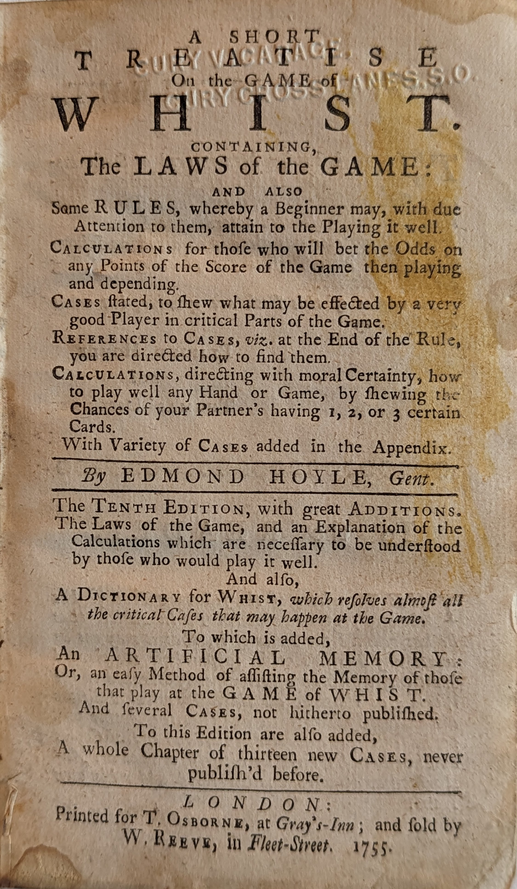

A Descriptive Bibliography of Edmond Hoyle
Copyright © 2014-26 by David Levy
(page updated 2026-01-30)User Guide
Games.1.5
Mr. Hoyle's Treatises, printed for T. Osborne and sold by W. Reeve, first London edition, fifth issue, “tenth” edition, 1755.
| Collation: |
12o: [A]1 B–D12 E6 F–L12 [$½ (−B6,F1,G2,3,I5,6,L5,6) signed; signing F3 as A3, F5 as A5]; 115 leaves, pp. [2 ] [1] 2–84 [97–99] 100–123 [124–127] 128–177 [178–180] 181–224 [225–240] [=228] |
| Section Title Whist |
 |
A SHORT | TREATISE | On the GAME of | WHIST. | CONTAINING, | The LAWS
of the GAME: | AND ALSO | Some RULES, whereby a Beginner may, with due |
Attention to them, attain to the Playing it well. | Calculations for thoſe who will bet the Odds on | any Points of the Score of the
Game then playing | and depending. | Cases ſtated, to ſhew what may be effected by a very | good Player in
critical Parts of the Game. | References to Cases, viz. at the End of the Rule, | you are directed how to find them. | Calculations, directing with moral Certainty, how | to play well any Hand or Game,
by ſhewing the | Chances of your Partner’s having 1, 2, or 3 certain |
Cards. | With Variety of Cases added in the Appendix. | [rule] | By EDMOND HOYLE, Gent. | [rule] | The Tenth Edition, with great Additions. | The Laws of the Game, and an Explanation of the | Calculations which
are neceſſary to be underſtood | by thoſe who would play it well. | And
alſo, | A Dictionary for Whist, which reſolves almoſt all | the critical Caſes that may
happen at the Game. | To which is added, | An ARTIFICIAL MEMORY: | Or, an eaſy Method of
aſſiſting the Memory of thoſe | that play at the GAME of WHIST. | And
ſeveral Cases, not hitherto publiſhed. | To this Edition are alſo added, | A whole
Chapter of thirteen new Caſes, never | publiſh'd before. | [rule] | LONDON: | Printed for T. Osborne, at Gray's Inn; and ſold by | W. Reeve, in Fleet-Street. 1755. |
| Contents: |
Signature (Page) Reference |
Contents |
Signature (Page) Reference |
Running Titles |
| A1r |
section title whist |
|
|
| A1v |
‘ADVERTISEMENT. | [...] | To the READER. | [...] | [autographs of Edmond Hoyle and
Thomas Osborne]’ |
|
|
| B1r–L12v (1–240) |
see Games.1.1 (1748) |
B1v–L12v (2–240) |
see Games.1.1 (1748) |
| Publisher: |
Thomas Osborne, James Hodges (advertisement), Richard Baldwin (advertisement) |
| Printer: |
Thomas Gardner (ornaments) |
| Notices: |
1755-12-24 Public Advertiser: "Just published, the tenth edition (price only three shillings in marble
binding)...printed for T. Osborne...J. Hodges...and R. Baldwin; and sold by
all booksellers in Great-Britain and Ireland." |
| Price: |
3s. (advertisement) |
| References: |
ESTC T87518, Jessel 802, Marshall s7 no.8 p344 (1889-11-02), Rather 39 |
| Copies Seen: |
ABu [SB 79541 Hoy]; L [7912.a.74] (ECCO); O [Jessel f.554]; O [Vet. A5.f.211]; Copisarow; OCl [789.87H F55L]; TNJ [GV1241.H8 A9 c.2]; Levy [2050] |
| Other Copies: |
Cq [G.27.38]; Om [50.E.10.]; AMu [OTM: OK 06-1703]; CaNSHD [GV1277.H89 1755]; TxCM [GV1277.H89 1755]; TxHU [GV1277.H89 1755]; AuVU [795.41 H867] |
| Notes: |
The final reissue of Games.1.1 with a cancel section title for the "tenth" edition of whist. |
Home